In this codelab, you will define and call your own functions using the different syntaxes available in Scala.
val functionComplete the square function such that it returns x to the power of 2.
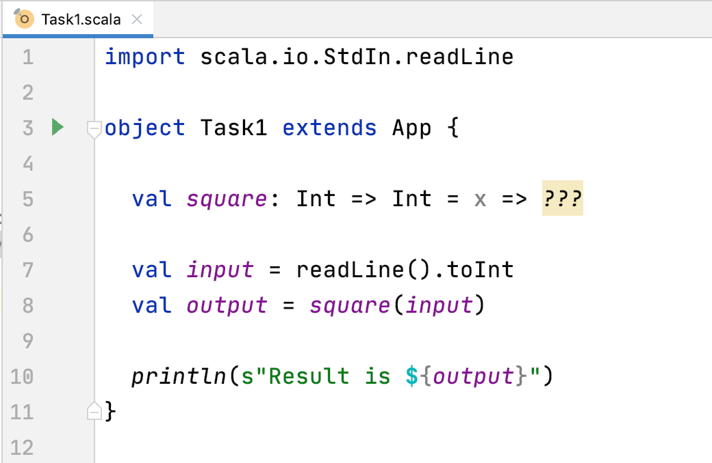
Example
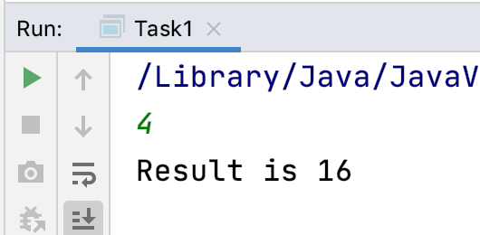
Write a program that reads a string and prints it out 2 times.
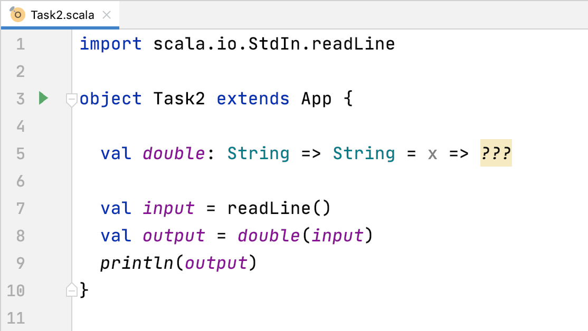
Example
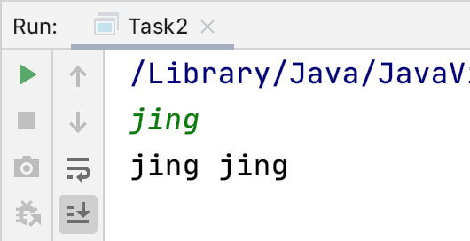
In Imperative Programming, typically if-else is a control flow statement. Example in Java:
if (number < 10) {
System.out.println("Single");
} else {
System.out.println("Multiple");
}In Functional Programming, if-else can be used as an expression. Example in Scala:
val digits: String = if (number < 10) "Single" else "Multiple"General form:
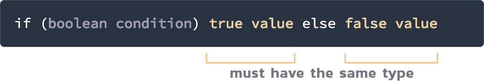
Write a program that reads 2 integers and prints out the smallest one (minimum) using a conditional if-else expression.
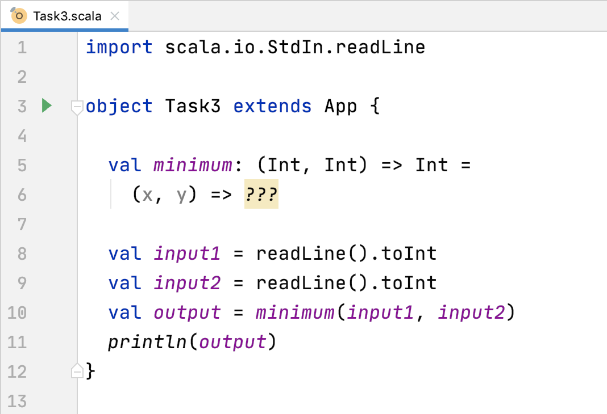
In English, the plural of a noun is usually formed by adding an "s" at the end of the word. For example: dog => dogs, cat => cats. However there are some additional rules. If the word ends in "s" then you usually add "es". For example: kiss => kisses.
Write the dumbPlural function.
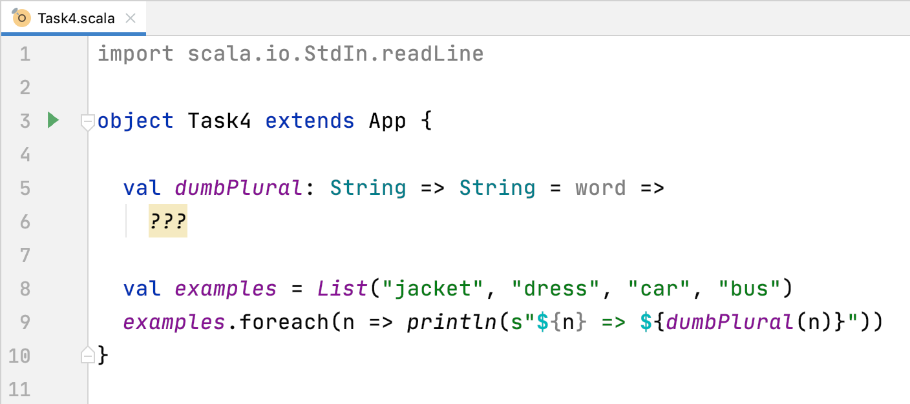
Output
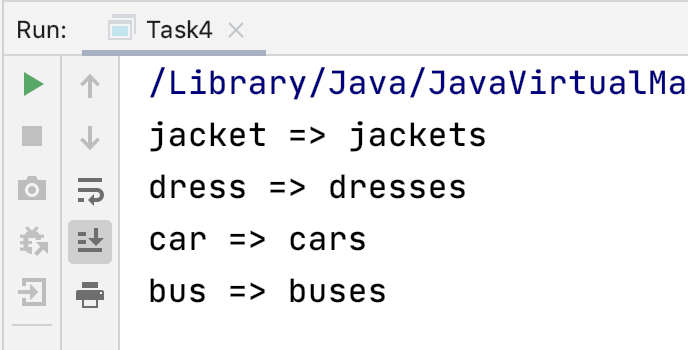
In this section we will use an alternative syntax for defining functions.
def functionThe def syntax is closer to a method in Java: the function name is followed by one or more parameters in parentheses.
Complete the average3 function so that it returns the average of the 3 double values (x,y,z).
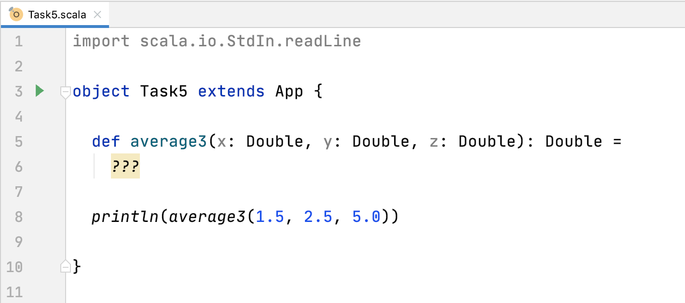
The output should be 3.5.
In Task 3 you wrote a minimum function (using the val syntax) for 2 integers. Write a minimum function for 3 integers using the def syntax.
You may want to use some of the string functions that were introduced in C2. Furthermore, the String class is the same as Java so you can use any Java String method in Scala too.
In English, the vowels are "A", "E", "I", "O" and "U". Write a function that returns true if the input string starts with a vowel.
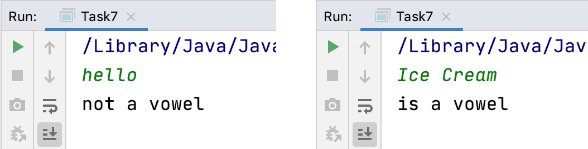
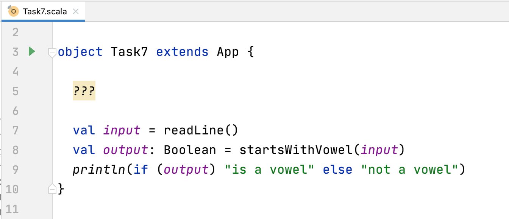
A mobile phone number in Thailand has 10 numbers and starts with 06 or 08 or 09. Write a function that returns true if the input string is a mobile number.
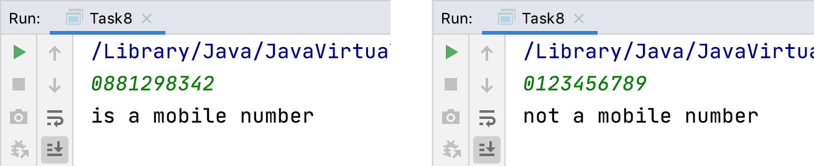
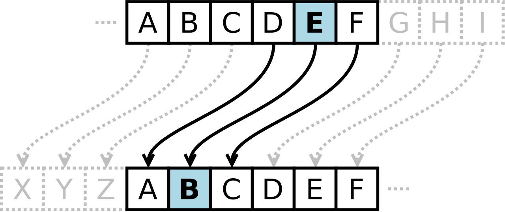
One of the simplest encryption algorithms is the Caesar cipher (also known as "Shift cipher"), named after Julius Caesar who is known to have used it. Each letter is encoded by shifting it in the alphabet. If the shift key is 1 then A is encoded as B, B as C, etc.
(The Caesar cipher is easily cracked because, like other substitution ciphers, the distribution of letters is predictable in most languages.)
The simplest Caesar cipher is when the shift key is 1. Write a function that shifts a character by 1.
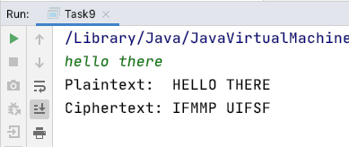
object Task9 extends App {
...
val plaintext = readLine().toUpperCase
val ciphertext = plaintext.map(c => shiftChar(c))
println(s"Plaintext: ${plaintext}")
println(s"Ciphertext: ${ciphertext}")
}Extend your solution to Task 9:
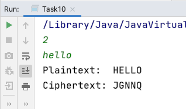
In this codelab you have learnt to define your own functions. Scala gives you 2 ways to give a function a name.
val functiondef functionThe next topic is recursive functions.